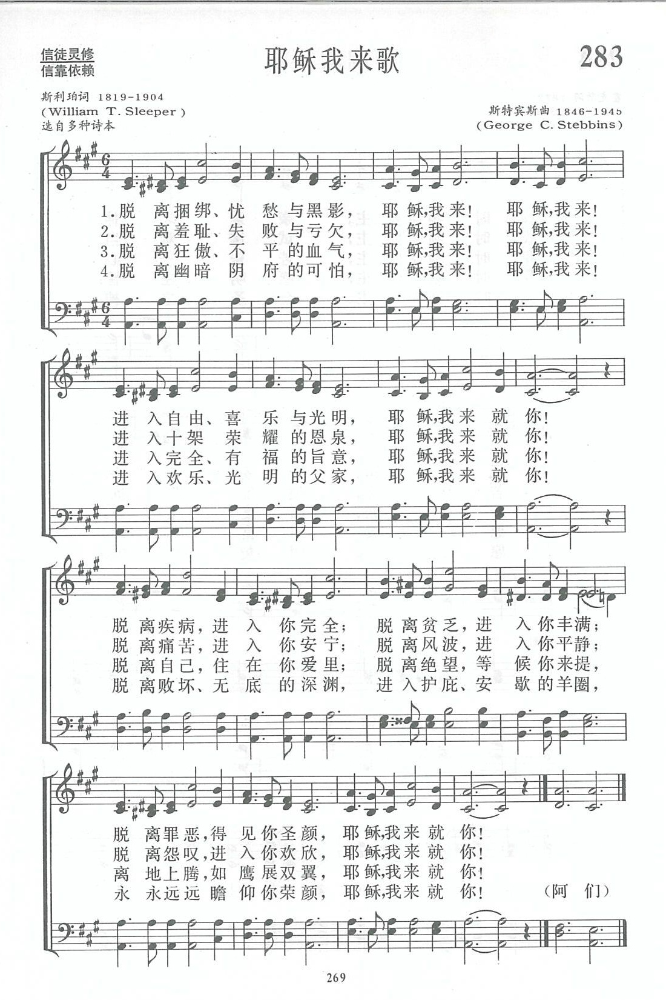

|
|
|
|
1 Out of my bondage, sorrow and night,
2 Out of my shameful failure and loss,
3 Out of unrest and arrogant pride,
4 Out of the fear and dread of the tomb, |
1.脱离捆绑 忧愁与黑影 耶稣 我来 耶稣 我来 进入自由 喜乐与光明 耶稣 我来就你 脱离疾病 进入你完全 脱离贫乏 进入你丰满 脱离罪恶 得见你圣颜 耶稣 我来就你 2.脱离羞耻 失败与亏欠 耶稣 我来 耶稣 我来 进入十架荣耀的恩泉 耶稣 我来就你 脱离痛苦 进入你安宁 脱离风波 进入你平静 脱离怨叹 进入你欢欣 耶稣 我来就你 3.脱离狂傲 不平的血气 耶稣 我来 耶稣 我来 进入完全 有福的旨意 耶稣 我来就你 脱离自己 住在你爱里 脱离绝望 等候你来提 离地上滕 如鹰展双翼 耶稣 我来就你 4.脱离幽暗阴府的可怕 耶稣 我来 耶稣 我来 进入欢乐 光明的父家 耶稣 我来就你 脱离败坏 无底的深渊 进入护庇 安歇的羊圈 永永远远瞻仰你荣颜 耶稣 我来就你 阿们 |
|
https://www.zanmeishige.com/tab/13956.html?songbook=1&index=283

|
|
|
|
|


讚美詩(新編)283耶穌我來歌 https://youtu.be/rqPdsJ1eXj0 -
Out of My Bondage Sorrow and Night (Jesus I Come) · The Celebration Choir
https://youtu.be/LK7GzWefNj0 -
Out of My Bondage, Sorrow, And Night · Gary Prim
https://youtu.be/HRTbzJvvPkc
| Text: | Jesus, I Come |
| Author: | William T. Sleeper |
| Tune: | JESUS, I COME |
| Composer: | George C. Stebbins |
| Short Name: | William T. Sleeper |
| Full Name: | Sleeper, William T. (William True), 1819-1904 |
| Birth Year: | 1819 |
| Death Year: | 1904 |
Sleeper, W. T.

is given in I. D. Sankey’s Sacred Songs & Solos, 1881, as the author of “A ruler once came to Jesus by night” (Need for the New Birth).
--John Julian, Dictionary of Hymnology, Appendix, Part II (1907)
===============
William T. Sleeper (1819-1904)]
Born: February 9, 1819,
Danbury, New Hampshire.
Died: September 24, 1904, Wellesley, Massachusetts.
Sleeper attended
Phillips-Exeter Academy, the University of Vermont, and the
Andover Theological Seminary. After ordination, he conducted
home ministry work in Massachusetts and Maine. He later became
pastor of the Summer Street Congregational Church in Worcester,
Massachusetts, where he served over 30 years. His works include:
The Rejected King, and Hymns of Jesus, 1883.
-- www.hymntime.com
Tune Information
| Title: | [Out of my bondage, sorrow, and night] |
| Composer: | George C. Stebbins (1887) |
| Meter: | Irregular |
| Incipit: | 54532 17651 71221 |
| Key: | A♭ Major |
| Copyright: | Public Domain |
| Short Name: | George C. Stebbins |
| Full Name: | Stebbins, George C. (George Coles), 1846-1945 |
| Birth Year: | 1846 |
| Death Year: | 1945 |

Stebbins studied music in Buffalo and Rochester, New York, then became a singing teacher. Around 1869, he moved to Chicago, Illinois, to join the Lyon and Healy Music Company. He also became the music director at the First Baptist Church in Chicago. It was in Chicago that he met the leaders in the Gospel music field, such as George Root, Philip Bliss, & Ira Sankey.
At age 28, Stebbins moved to Boston, Massachusetts, where he became music director at the Claredon Street Baptist Church; the pastor there was Adoniram Gordon. Two years later, Stebbins became music director at Tremont Temple in Boston. Shortly thereafter, he became involved in evangelism campaigns with Moody and others. Around 1900, Stebbins spent a year as an evangelist in India, Egypt, Italy, Palestine, France and England.
(www.hymntime.com/tch)
第283首 耶稣我来歌 Out of my bondage，sorrow and night _斯利珀
经文：“凡劳苦担重担的人，可以到我这里来，我就使你们得安息”(太11：28)。
这是一首近代最流行、最受人欢迎的福音号召圣诗之一，无论是从文学、教义、信徒灵性哪一方面来衡量，都堪称为杰作。
原作者斯利珀(事略参阅第226首)是美国公理会(见第25首注①)侧重福音布道的牧师，他继所作的《必须重生歌》之后，又写出这首名歌。
这首诗共四节，其中有
十三处“脱离”，九处“进入”，
十六处“耶稣我来”。
它号召信徒必须靠主脱离一切容易缠累我们的罪一捆绑、忧愁、黑暗、疾病、贫乏、罪恶，谦卑地来到主前，进入那自由、光明、喜乐、丰满，得以永远瞻仰主的荣颜。
曲作者斯特宾斯的事略参阅第21首。他说：“这是一首罕见的好诗。原作者如果知道在他去世之前该诗已经在美国国內外风靡一时，也必定会满意”。调名《耶稣我来(JESUS I COME)》。最初词与曲同在1887年出版的第五期《福音圣诗》内，并以“我的上帝啊，求你救我”(诗71：4)为题。
Words: William True Sleeper (b. Feb. 9, 1819; d. Sept.
24, 1904)
Music: George Coles Stebbins (b. Feb. 26, 1846; d. Oct. 6,
1945)
Links:
Wordwise Hymns
The Cyber
Hymnal
Note: This hymn was published in 1897. Pastor Sleeper also wrote the gospel song Ye Must Be Born Again, published ten years earlier. George Stebbins, who lived for nearly a century, provides a bridge between the nineteenth and the twentieth centuries. He knew many of the prominent hymn writers of a former time, and some of the newer ones as well. His book, Reminiscences and Gospel Hymn Stories, gives us a valuable firsthand look at a bygone day.
This is a hymn of surrender and commitment, voicing the heartache of the sinner coming to Christ for salvation and spiritual restoration. The poetry is dense, perceptive, and often convicting. More than a dozen lines present the trials and troubles of a needy soul, seeking the Lord and His grace for the answer.
CH-1. Look at the words that describe the sinner’s condition: bondage, sorrow, night, sickness, want and sin. And I don’t think the reference to sickness and want has to do with the modern Prosperity Gospel, which lures the naive with a promise of unfailing health, wealth, and happiness. In this case the words are used to describe the soul-sickness of sin, and the spiritual poverty of one without God.
The contrasting condition of one who has put his faith in Christ is portrayed with the words: freedom, gladness, light, health and wealth (spiritually), and the wonderful assurance of being in Christ. This latter phrase, “in Christ,” or “in Him,” is used over and over by the Apostle Paul to indicate the Christian’s eternal standing or position. Legally, God sees us in His Son, and therefore having participated in His death and resurrection (Rom. 8:1; II Cor. 5:17; Eph. 1:3, 6, 7; Col. 2:10, etc.).
CH-1) Out of my bondage, sorrow, and night,
Jesus, I come, Jesus, I come;
Into Thy freedom, gladness, and light,
Jesus, I come to Thee;
Out of my sickness, into Thy health,
Out of my want and into Thy wealth,
Out of my sin and into Thyself,
Jesus, I come to Thee.
CH-2. The list goes on: shameful failure and loss, sorrows, storms, distress. And the contrast is painted again: glorious gain, Thy [restorative] balm, Thy calm, and jubilant psalm–joyful songs arising from the hearts of the redeemed.
CH-3. More of the sinners plight: unrest, arrogant pride (self rule, and the attempt to live independently of God), and despair, contrasted with: delighting to do Thy blessed will, Thy love, raptures above, the latter perhaps indicating heavenly joy and a heavenly inheritance, claimed one day when we go to be with Christ.
CH-3) Out of unrest and arrogant pride,
Jesus, I come, Jesus, I come;
Into Thy blessèd will to abide,
Jesus, I come to Thee.
Out of myself to dwell in Thy love,
Out of despair into raptures above,
Upward for aye on wings like a dove,
Jesus, I come to Thee.
CH-4. Finally, the hymn faces us with the fear and dread of the tomb and the depths of ruin untold. It is as though there is nothing after this life to look forward to, until one comes to the Saviour. Then, we have joy and light, peace in His sheltering fold, and the Lord’s glorious presence forever.
CH-4) Out of the fear and dread of the tomb,
Jesus, I come, Jesus, I come;
Into the joy and light of Thy home,
Jesus, I come to Thee.
Out of the depths of ruin untold,
Into the peace of Thy sheltering fold,
Ever Thy glorious face to behold,
Jesus, I come to Thee.
For some reason the Cyber Hymnal has, for stanza 4, line 3, “Into the joy and light of Thy throne.” But none of the hymn books I reviewed has that–including Gospel Hymns #5, where it was published originally in 1887. The contrast is between the fear of death and the grave, as opposed to the wonder of our heavenly “home,” our “sheltering fold.” That the throne of God will be there is not the issue in this case.
“Ever Thy glorious face to behold” is the climax of all. Over and over, the Scriptures picture heaven in terms of being with the Lord forever (cf. Jn. 14:3; 17:24; II Cor. 5:8; Phil. 1:23; I Thess. 4:17; I Jn. 3:2). What a day that will be!
Questions:
1) Can you think of other significant contrasts between the lost sinner
and the redeemed child of God?
2) Are you rejoicing today in all the blessings you have in Christ?
Links:
Wordwise Hymns
The Cyber
Hymnal
https://wordwisehymns.com/2014/05/07/jesus-i-come/